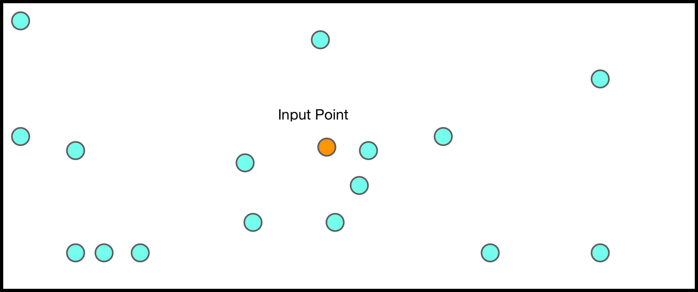
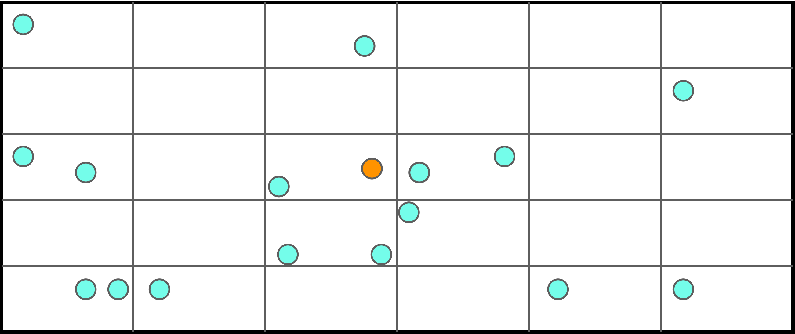
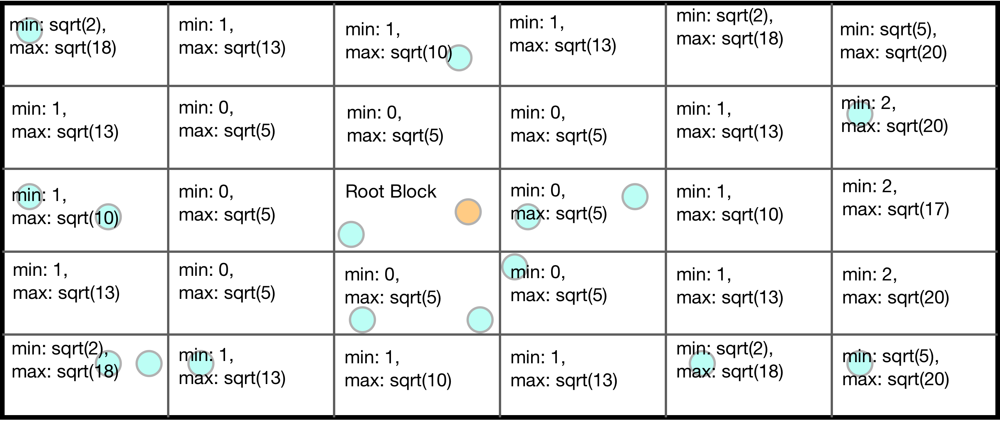
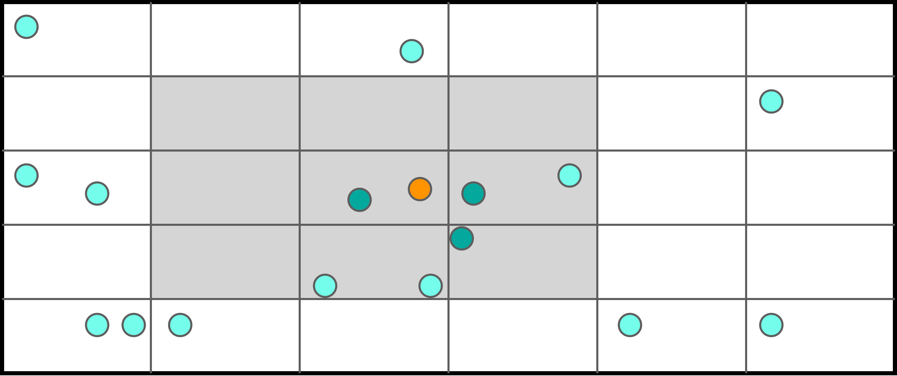

Block Partition
This is an original algorithm that can efficiently find nearest neighbors for multidimensional data. The main idea is to partition the space into a set of blocks. Then when we search for neighbors, we only need to search nearby blocks. It works best in scenarios with a large amount of lower dimensional data. This is a personal research project that arose from my studies as an undergrad. I hope to eventually publish my findings more formally. In the meantime, please check out the repo on Github.
Here is a 2D example. We want to find the nearest three neighbors for the orange point. First, we split the space evenly along each dimension. Then, we use binary search to quickly assign each point to a box. The box with the point of interest is called the root block. Here we assume that each block is 1x1.


Next, we sort the boxes that contain data points based on their minimum distance. We then iterate over the blocks in order of miminum distance. If have computed the necessary number of neighbors, then we begin tracking the max distance to a neighbor (Dmax). If we reach a block with a minimum distance to the root block that is greater than the current Dmax, then the algorithm terminates, as no closer points can be found. Here we would only compute the distance to the points in the gray blocks, since Dmax < 1.


The run time for this method can vary based on the input data and the chosen partition size. If the partition size is too large or too small, the algorithm will preform worse than brute force. I will add results here as I obtain them. Results are obtained using a python script. "Block Partition" describes the time to construct the partition. "Single Run" describes the time to find the nearest neighbors for one point using the partition. "Brute Force" describes the time needed to compute the necessary row of the distance matrix and sort it. All units are nanoseconds.
| Dimension | Points | Data Type | Neighbors | Block Partition | Single Run | Brute Force |
|---|---|---|---|---|---|---|
| 4 | 10000 | Uniform | 10 | 148.09 | 8.52 | 30.60317039489746 |
| 3 | 20000 | Uniform | 15 | 261.25 | 15.88 | 50.74317039489746 |
Let's briefly compare the mathematics using of this method and computing a distance matrix (brute force). The complexity for brute force is N^2. The block partition algorithm, on the other hand, has two parts. The first is constructing the partition, which has complexity N * D * log(K). D is the number of dimensions and K is the partition size. After that, the cost of computing the nearest neighbors for one point is at most N, and at least D.
Thanks for reading! This is a work in progress. If you have any suggestions or just want to chat, send me an email @ nhausch@gmail.com